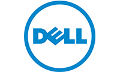

|
 |
|
CLOUDBAND ECOSYSTEM
JUNE MONTHLY UPDATE
|
|
|
Hello NFV Influencers,
Mark your calendar for an event coming in September where Ecosystem
Partners will be able to demonstrate their passion, knowledge,
perseverance and creativity and “show off” to some of the Leading
Service Providers in our industry. Stay tuned, the Sky is the Limit when
it comes to NFV.
Best,
Valerie and Debbie
Follow us on Twitter:
 @valerienoto @valerienoto
@dawnpatroldeb
|
|
|
|
|
|
|
NEW PARTNERS TO THE ECOSYSTEM THIS MONTH
|
|
|
|
Skyfire is dedicated to leveraging the power of cloud
computing to radically improve the mobile Internet experience for both
operators and their consumers. Skyfire’s innovative, next-generation
carrier cloud approach to mobile video and data optimization provides
operators with huge cost savings, elastic capacity, and the ability to
surgically enhance quality of experience on a per-stream level. Skyfire
delivers all the key elements an operator needs to take its first steps
towards an NFV and SDN future.
www.skyfire.com/
|
|
|
|
Wipro Ltd. is a leading Information Technology,
Consulting and Outsourcing company that delivers solutions to enable its
clients do business better. Wipro delivers winning business outcomes
through its deep industry experience and a 360 degree view of "Business
through Technology" - helping clients create successful and adaptive
businesses. A company recognized globally for its comprehensive
portfolio of services, a practitioner's approach to delivering
innovation, and an organization wide commitment to sustainability.
www.wipro.com
|
|
|
|
L&T Technology Services is a wholly owned
subsidiary of Larsen & Toubro with focus in the engineering
services space, partnering with many of the Fortune 500 companies
globally. It offers design and development solutions throughout the
entire product development chain across various industries such as
Industrial Products, Medical Devices, Transportation, Telecom and
Hi-tech and Process Engineering. The company also offers solutions in
the areas of Mechanical engineering Services, Embedded Systems Services,
Product Lifecycle Management (PLM), Engineering Analytics, Power
Electronics, M2M and the Internet of Things.
www.LntTechservices.com
|
|
| 
|
DELL provides world class compute, storage, networking
hardware, software and services for enterprises, carriers, data centers.
Founding member of CloudNFV, contributing in many open-standard
industry forums, Dell develops and promotes open, standard, compatible
network and ICT solutions which leverage the massive scale and economies
of well-established offerings. With dedicated resources for Telecom and
Data Center practices, Dell works closely with technology partners to
bring high quality solutions to market.
www.dell.com
|
|
|
|
Sandvine's network policy control solutions add
intelligence to fixed, mobile and converged service provider networks to
enable services that increase revenue and reduce network costs.
Sandvine's equipment performs end-to-end policy control functions,
including traffic classification, and policy decision and enforcement
across the data, control and business planes. Sandvine's products
provide actionable business insight, the ability to deploy new services
and tools to optimize traffic while enhancing subscriber quality of
experience.
www.sandvine.com
|
|
|
|
|
|
RED HAT AND ALCATEL-LUCENT SPEAK TO A PACKED AUDIENCE AT OPENSTACK SUMMIT
|
|
Red Hat and Alcatel-Lucent: The Right Partnership to Support a Service Provider's Journey to the Cloud
As industry leaders in networking and open source software solutions,
Red Hat and Alcatel-Lucent have teamed-up to deliver a new high
performing, carrier-grade NFV solution for network service providers.
Alcatel-Lucent’s CloudBand NFV Platform integrates with Red Hat
Enterprise Linux OpenStack Platform to manage orchestration of the cloud
network for peak performance. This video details the benefits of NFV
migration for network operators, and how they will benefit by this
change in architecture.
Listen to Itai Mendelsohn; CloudBand R&D Lead
|
|
|
|
|
|
Providing Security in NFV
While Network Functions Virtualization (NFV) introduces new challenges
to security, it also presents unique opportunities for addressing
security
problems because of the unprecedented scale, flexibility and central
control it affords. Compute, storage and network resources can be
optimally allocated
and stitched together, as required by the security policy. To reduce
complexity, a centralized approach that leverages automation
capabilities is recommended. Alcatel-Lucent CloudBand™ enables this
approach.
Download Providing Security in NFV White Paper now
Don’t miss this Blog By: David Amzallag - Alcatel-Lucent Vice President, Virtual Telecommunications and CloudBand CTO
He discusses NFV INSIGHTS: The making of NFV security - "from vision to reality"
|
|
|
|
|
CLOUDBAND ECOSYSTEM IN THE NEWS
|
|
The Virtualization 100 group, launched in 2014 by the Network
Virtualization and SDN World global congress, have announced the results
of an in-depth industry survey at their inaugural gathering in London.
The most admirable vendors were considered to be Alcatel-Lucent, for
launching their CloudBand ecosystem.
Read More
|
|
|
|
|
|
Watch as Bob Haddleton, Solution Architect demonstrates the deployment of an Alcatel-Lucent 7510 Border Gateway using CloudBand.
Watch Now
|
|
|
|
|